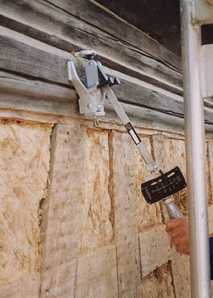

Eine Dübelprüfung ist durchzuführen,
wenn
Bei der Dübelprüfung ist besonders
auch der Prüfumfang und die Prüflast
zu beachten
Die Dübelprüfung ist zu protokollieren. Das Protokoll ist während der Standzeit des Gerüstes aufzubewahren.